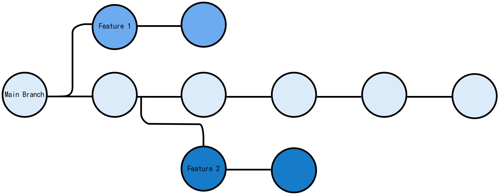

Background
For a while, I couldn’t quite fully grasp Git and its features that make it the most widely used version control system. Frequently I would find myself watching YouTube videos on key concepts and commands whenever I needed to use Git for my projects, only to completely forget everything, weeks later. And this is why I decided to take the time to learn deeply about Git, consolidate my knowledge with this guide and have it serve as a future reference.
What is Git
One of the first questions I had was “wait, so what is Git exactly?” And to answer that: Git is a distributed version control system, often abbreviated as VCS. But what does that mean? Essentially at its core, it’s a software tool which tracks changes to files such as applications, documents or websites. Without VCS we would have to store all the different copies and versions of a project in different folders. If you’ve ever tried this approach you’d likely agree that this can be a very slow and tedious process that doesn’t scale at all, especially if multiple people are working on the same project.
Uses of Git?
The most common use for Git is for source code management (SCM) in software development, as the name suggests it helps track modifications made to a codebase or repository.
Git Repositories
A Git repository is a collection of files of different versions, it tracks all changes made to files in a project to build a history over time. Initialising Git on a project results in the creation of a Git repository, this will be the .git folder. If you’re wondering what happens if you accidentally delete this folder and as you might (or might not) expect you will end up erasing your project’s entire history along with it.
Git repositories (often shortened to repo) can be either local or remote. A local repo is stored on a local machine for direct use, enabling the user access to all the files and their commit history. Whereas, a remote repository is hosted on the internet or another network for indirect use.
Using a remote repository in teams
A remote repository is particularly useful for a team working on a project, as a member of the team you will be able to clone the remote repo into your local repo, allowing you access to the most recent version of the project. You can proceed to make changes to the project in your local repo and once you’re satisfied you can share these changes with the rest of the team. This is done via the git push command which copies the changes from your local repository (the .git folder on your computer) to the remote repository (the .git folder on the remote computer). Now your changes will be visible to everyone who has access to the remote repository.
Another thing to mention is that you can commit changes to your local repository even whilst disconnected from the internet (Git allows you to work offline), and no one else can view changes made in your local repo. Once you have a connection, you can push your changes to the remote Git repository for everyone on your team to see.
Unique Features of Git
Git is fast
One of the features of Git that make it fast is that each user has a full local history of a repository and can create commits and inspect the file history without an internet connection. Additionally, most operations are performed locally, which makes Git a faster VCS alternative than centralised systems that require constant communication with a remote server.
Git is distributed
As mentioned earlier, when working in a team each member gets a full copy of the repository when they clone it, along with a full history of the commits so far. This means that in the event of a crash there is no single point of failure with Git, as every user has a copy of the main server (unless there is only a single copy of the repository).
In terms of development, a distributed system makes it easier to scale an engineering team. For instance with a centralised VCS, if a developer breaks the branch which contains the production code, other developers won’t be able to commit their changes until this is resolved. However, with Git this isn’t an issue, as everyone can continue working in their local repositories.
Git’s branching model
One of the unique aspects of Git that distinguish it from other SCM tools is its branching capabilities. Think of a branch as an isolated environment for experimenting with a new feature, fixing a bug or testing out an idea. If we are satisfied we can go ahead and merge it with the master branch. A local branch exists on the local user’s machine; the main branch typically contains the production code.

Users are encouraged to utilise multiple local branches that can be independent of each other for the reasons stated above (disposable experimentation, working on new features and trying out new ideas).
Additionally, it is not necessary to push all your local branches to the remote repository, you can decide which ones to share. Ultimately, this gives users the freedom to try out new ideas and alleviates the worry of having to plan when they are going to share them with the rest of the team. Another important thing to mention is that the creation, merging and deletion of branches is extremely fast (takes seconds) and easy.
Any workflow
A workflow is a recommendation for how to utilise Git for all members to accomplish work productively and consistently. Git’s distributed nature and intuitive branching system make it possible for an almost endless number of workflows to be implemented with relative ease. As Git is focused on flexibility there is no standardised process for how to interact with Git.